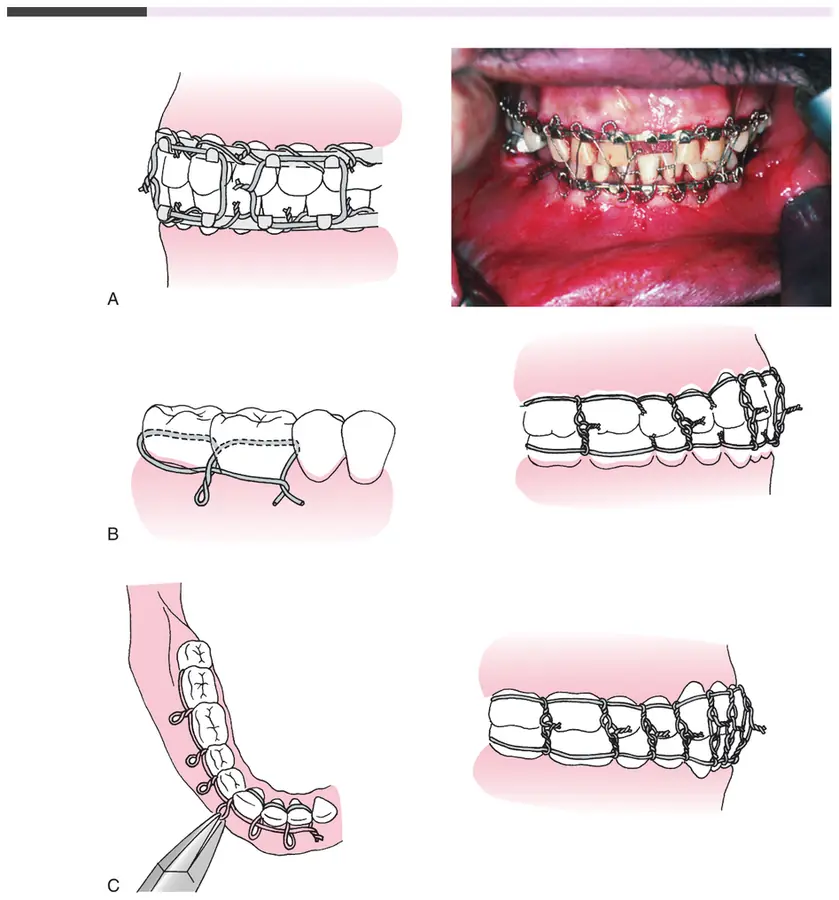
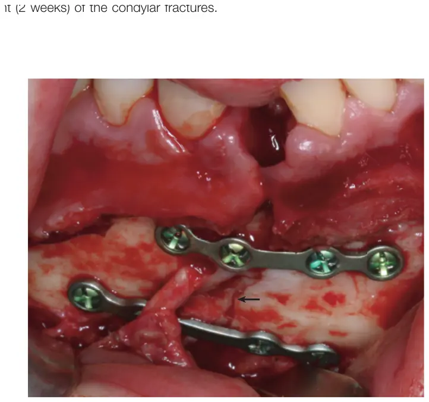

نسخه استخراجشده؛ ترجمه یا تأیید علمی انجام نشده است. وضعیت: captured
هدف کلی: هرگاه ساختارهای صورت آسیب ببینند، درمان باید به سمت حداکثر بازتوانی بیمار هدایت شود.

و اهداف مشخص درمان شکستگی صورت:
و دو ملاحظهی همراه: حین درمان و ترمیم، مهم است که اثر نامطلوب بر وضعیت تغذیهای بیمار به حداقل برسد و اهداف درمان با کمترین میزان ناراحتی و مزاحمت ممکن به دست آیند.
و دو اصل جراحی پایه که راهنمای درماناند:
و افزون بر این دو: اکلوژن پیش از عمل باید بازگردانده شود، و هر عفونتی در ناحیهی شکستگی باید ریشهکن یا پیشگیری گردد.
و زمانبندی — قاعدهی کلی و سه دلیلش: بهطور کلی، همیشه بهتر است آسیب در اسرع وقت درمان شود. و این سه دلیل دارد:
ولی درمان اغلب به چند دلیل به تعویق میافتد:
مفهوم بازسازی صورت بر پایهی ستونها (buttresses): جراح میکوشد صورت را بر این پایه بازسازی کند که ساختارهای استخوانی مشخصی در صورت، حمایت اصلی را در جهتهای عمودی و قدامی-خلفی فراهم میکنند.

سه ستون که دوطرفه وجود دارند و حمایتهای عمودی اصلی صورت را میسازند: (۱) نازوماگزیلاری، (۲) زیگوماتیک، و (۳) پتریگوماگزیلاری.
و ساختارهایی که برجستگی صورت را در جهت قدامی-خلفی حمایت میکنند: میلهی فرونتال، قوس زیگوماتیک و کمپلکس زیگوما، آلوئول و کام ماگزیلا، و بخش قاعدهای مندیبل.
و حالا مهمترین قاعدهی ترتیبی این درس: صرفنظر از نوع شکستگی صورت یا رویکرد جراحی بهکاررفته، عمل اولیه باید این باشد که دندانها در اکلوژن درست قرار گیرند و سپس شکستگیهای استخوانی بهطور مناسب جااندازی شوند.
و افزون بر آن: ترمیم استخوانی باید بر ترمیم بافت نرم مقدم باشد. (همان قاعدهای که در یونیت پیش هم دیدی.)
و یک تحول تاریخی جالب: بهطور سنتی، برنامهی درمان بیشتر شکستگیهای صورت این بود که با جااندازی شکستگیهای مندیبل آغاز شود و به سمت بالا در میدفیس پیش رود — با این استدلال که مندیبل بهآسانترین شکل قابل تثبیت است و اکلوژن و بقیهی اسکلت صورت میتوانند به مندیبل جااندازیشده تنظیم شوند.
ولی با پیدایش و بهبود تکنیکهای فیکساسیون صُلب (پلیت و پیچ)، درمان شکستگی صورت میتواند از ناحیهای آغاز شود که شکستگیها بهآسانترین شکل قابل تثبیتاند و به سمت ناتوانترین نواحی شکستگی پیش رود.
جااندازی شکستگی مندیبل — و یک اصل که نادیده گرفتنش نتیجه را خراب میکند:
نخستین و مهمترین جنبهی اصلاح جراحی، جااندازی درست شکستگی یا قرار دادن قطعات منفرد در رابطهی درست با یکدیگر است. و در جااندازی درست شکستگیهای استخوان دنداندار، مهمترین چیز قرار دادن دندانها در رابطهی اکلوزال پیش از آسیب است.
و یک هشدار: صرفاً همتراز کردن و درهمرفتگی قطعات استخوانی در محل شکستگی، بدون آنکه ابتدا رابطهی اکلوزال درست برقرار شود، بهندرت به اکلوژن عملکردی رضایتبخش پس از عمل میانجامد.
و MMF — فیکساسیون ماگزیلومندیبولار: برقرار کردن رابطهی اکلوزال درست با سیم کردن دندانها به هم، فیکساسیون ماگزیلومندیبولار (MMF) یا فیکساسیون اینترماگزیلاری نامیده میشود.